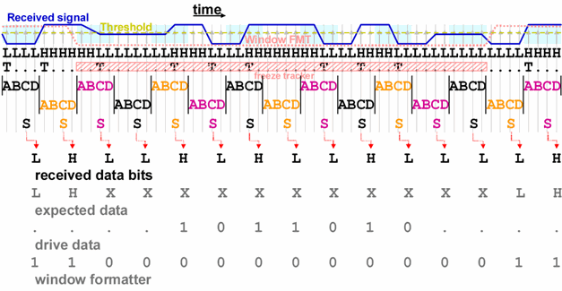

Tracking bi-directional pins
When a bi-directional pin is tracked, and it operates in input mode, then the tracker sees the drive data. Since these are irrelevant to the expected data stream, the tracker must be disabled during these sections of the test. For this purpose, the window formatter is used (which entails that window compares are not possible in protocol engine tests). It must be set to "0" to disable the tracker. This has the consequence that the observation window is "frozen", that is, it is not adjusted any more, regardless of any internal transitions within the current window.
When the window formatter is set to "1" again, tracking is resumed. By default, this restart is treated like the initial test start, that is, it includes
- toleration of one initial BC transition (jump by 2) on the transition tracking level, and
- re-synchronization with the expected data on the pattern tracking level.
Example
In order to simplify the graphic, the following example illustrates the operation mode by 1 UI observation windows. But note that in the actual implementation, the observation window actually consists of 3 UI (= 12 samples); see Drift and transition tracking.

In this example an IO pin switches from output mode to input mode and back to output mode. The tracker is disabled from the third window through window 13. There is a BC transition in the third observation window which is propagated to the following windows. All of these can be ignored, but if the tracker were not disabled, then the test would be ruined. For more information on BC transitions see Drift and transition tracking.
For the format of the setup data, see Special requirements for freezing the tracker.
Functional changes
- Introduced in SmarTest 7.0.1